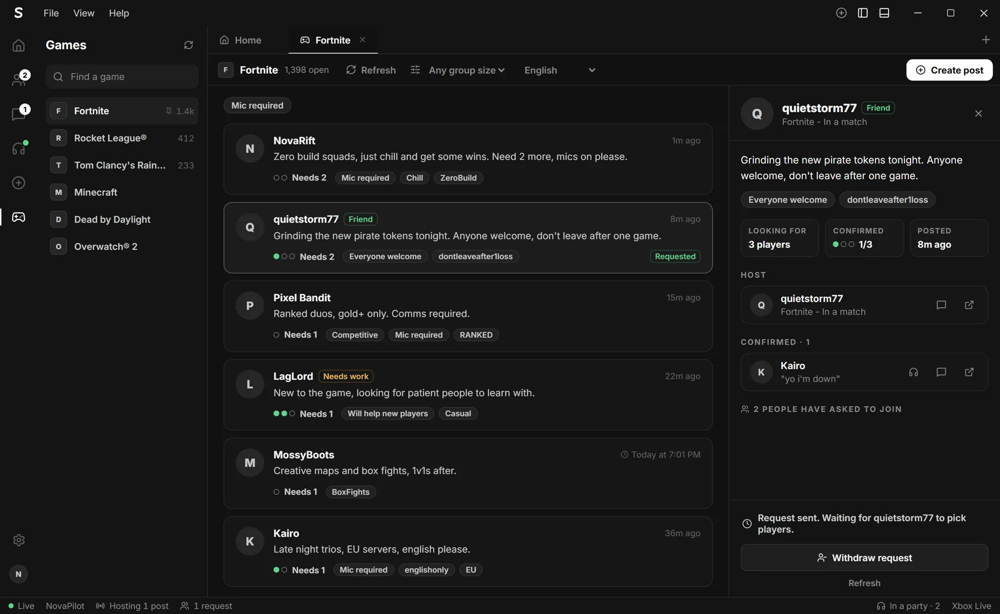
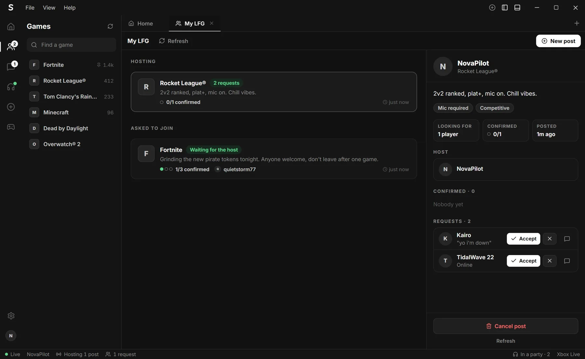
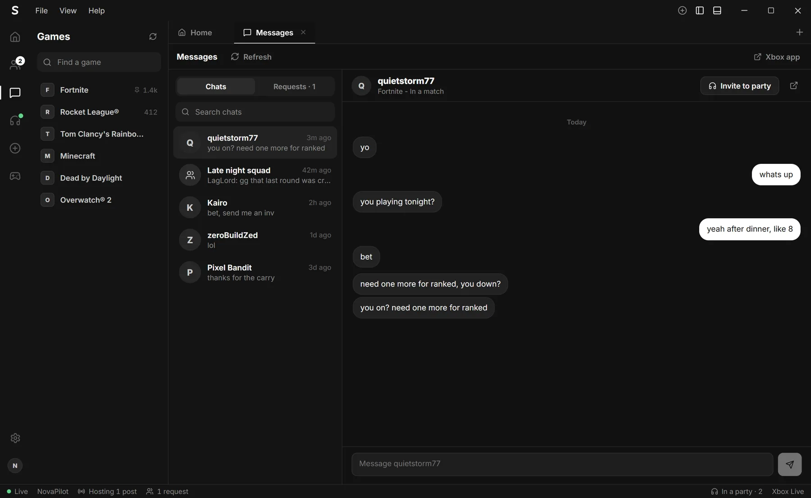
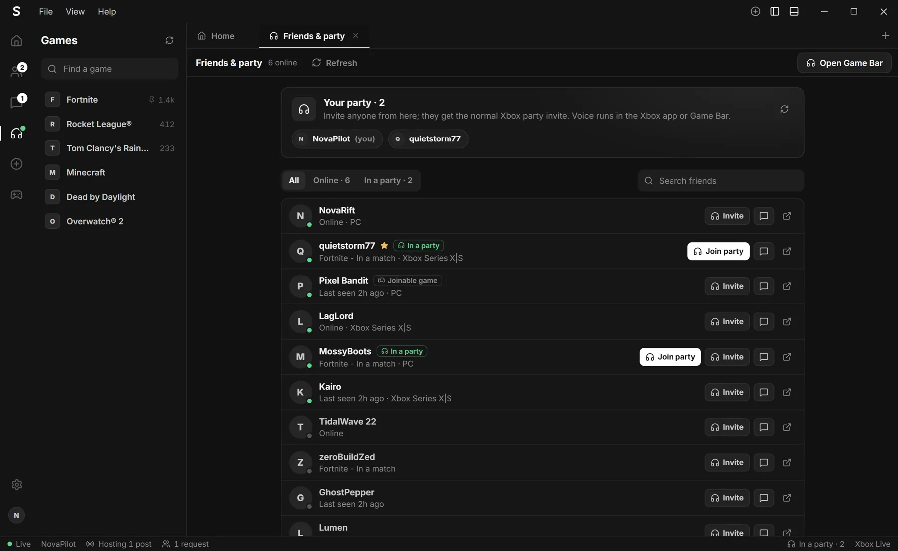
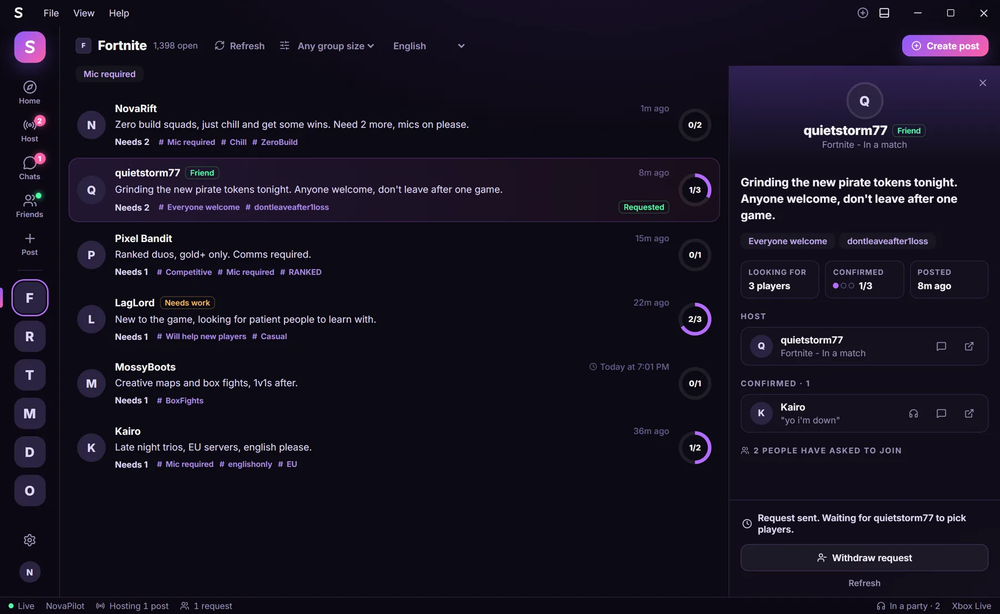

Xbox Looking for Group, on your PC.
Browse and join the same LFG posts console players see, host your own group, message players and invite them to your party. No controller, no phone.
· Sign in with your Xbox account on Microsoft's own page

Works with every game that uses Xbox LFG
Everything you do in LFG, minus the controller.
Squadr talks to Xbox's own Looking for Group, so console players see your posts and you see theirs.
Every open group for your games, live.
Pick a game and see who's looking right now. Check the host, who's already in, and what they want before you ask.
- Filter by tags, group size and language
- See each host's reputation and if they're your friend
- Ask to join with a note, and get a heads-up when you're picked
Can't find one? Host your own.
Say what you want to play, how many players you need, and add tags. Requests show up with a chime, and you pick who gets in.
- Posts show up on Xbox consoles and in the Xbox app too
- Accept or decline with one click
- Your post comes down by itself when you close Squadr

Talk to your squad from your keyboard.
Your Xbox messages and group chats, right next to your groups. Reply, check message requests and send party invites without switching apps.
- Direct messages and group chats
- Message requests from people who aren't your friends
- New message alerts while Squadr is open

See who's on. Invite them in.
Your friends list with who's online, what they're playing and who's in a party. Send party invites, or open a friend's party in the Xbox app.
- Online, in a party and joinable games at a glance
- Party invites in one click
- Voice still runs in the Xbox app or Game Bar

Classic or Pulse. Your call.
Prefer a game rail, a live feed and a side pane that's always open? Switch to the Pulse layout in Settings. Switch back any time.
- Pulse: game rail, feed and side pane with a violet glow
- Classic: tabs, a games panel and a status bar

Set up in about a minute.
Run the installer. Windows may show "Windows protected your PC" because the installer isn't code-signed yet. Click More info, then Run anyway.
Squadr shows a short code. Go to microsoft.com/link, enter it and approve. Your password only ever goes to Microsoft.
Choose the games you play and they're pinned to the top. Then find a group, or post your own.
Questions
Is Squadr free?
Yes. No ads, no subscription, no account other than your Xbox one.
Is it safe to sign in?
You sign in on Microsoft's own page with a one-time code, the same way the Xbox app on your phone does. Squadr never sees your password. Your sign-in is stored on your PC, encrypted with your Windows account, and nothing is sent to us.
Why does Windows say "Windows protected your PC"?
The installer isn't code-signed yet, and Windows warns about any unsigned app it hasn't seen much. Click More info, then Run anyway. The source code is public on GitHub if you want to check it.
Do console players see my posts?
Yes. Squadr uses Xbox's own Looking for Group, so posts made in Squadr show up on Xbox consoles and in the Xbox app, and theirs show up in Squadr.
Do I need to keep Squadr open?
Xbox needs you online to keep you in a group. While Squadr is open it keeps you connected. When you close it, your post comes down and your join requests are withdrawn.
Does voice chat work in Squadr?
Not yet. Squadr shows your party and sends invites, and voice runs in the Xbox app or Xbox Game Bar (Win+G).
Is Squadr made by Microsoft or Xbox?
No. Squadr is an independent app. It uses the same Xbox services the Xbox app uses, which Microsoft can change at any time, so a feature may break until Squadr is updated.
Is there a Mac or phone version?
Not right now. Squadr is for Windows 10 and 11.